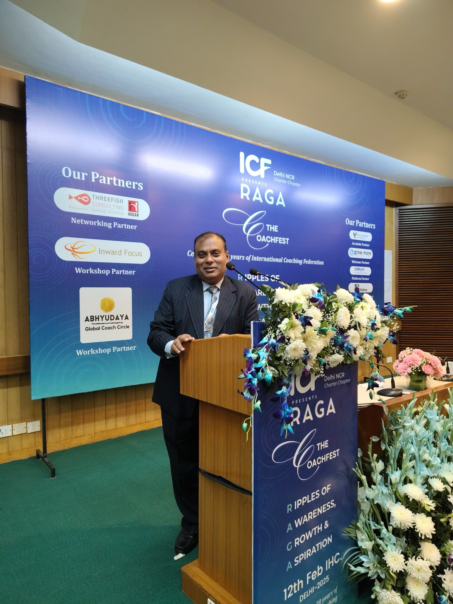

Decisions keep moving upwards. Teams wait for direction. Problems get resolved through escalation. Senior leaders get pulled deeper into day-to-day operations. Costs and delivery pressures continue to increase.
In such situations, the issue may not lie with one person or one process. It may be about how leadership and execution are working together.
This is where I bring my experience of leading complex operations to work with leaders and organisations on the wider business challenge.

These situations rarely have a single cause. Understanding what is really driving the problem is therefore the first step.
When too many decisions move upwards, senior leaders become bottlenecks and managers stop developing their own judgement. We examine where decisions should sit, what prevents people from taking ownership and what leaders may need to do differently.
Good execution needs more than targets and reviews. It requires clear priorities, ownership, timely decisions and a practical way of identifying and resolving problems.
Strengthening leadership below the senior-most level creates greater ownership, improves decision-making and reduces the need for constant intervention from the top.
Transformation is rarely only about changing processes, structures or technology. People need to understand what is changing, take ownership of new ways of working and continue delivering while the transition is happening.
Technology and automation can help, but sustainable improvement also requires clarity about work, ownership, capability and how decisions are made. The objective is not simply to reduce cost, but to understand how the organisation can work more effectively with the resources available.
I don't begin with a standard framework or a predetermined solution.
We start by understanding what is happening today, where execution is getting stuck, what is creating repeated intervention or escalation, and what part of the problem is about process versus leadership.
This may involve conversations with leaders and other stakeholders, understanding current ways of working and looking for patterns behind the visible problems.
From there, we identify the few areas where change can make the greatest difference. Depending on the situation, my role may involve advising, facilitating leadership conversations, challenging existing assumptions or working with individual leaders.
When something repeatedly goes wrong, it is easy to conclude that someone needs to perform better. Sometimes that is true.
But repeated problems can also point to unclear ownership, conflicting priorities, weak decision-making or ways of working that make success unnecessarily difficult.
Before asking, “Who needs to change?”, it can be useful to ask, “What in the system is making this difficult?”
Looking at both the person and the environment often leads to a more sustainable answer.
My approach has been shaped by more than three decades of working in operations and leadership roles in large, distributed and complex operating environments.
I don't assume that what worked in one organisation will automatically work in another. Experience provides perspective. The solution still needs to fit your context.
You don't need to begin with a request for a consulting assignment or a predetermined solution. Start with what you are seeing: Where is execution getting stuck? What keeps requiring senior intervention?